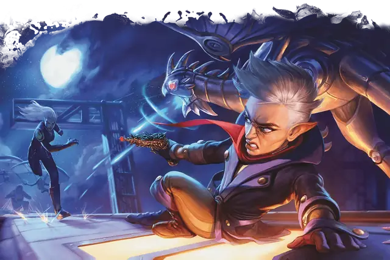

Артефактор
Artificer

Основная характеристика Интеллект
Кость хитов К8 за уровень Артефактора
Хиты за уровень 1к8 (или 5) + ваш модификатор Телосложения (суммарно минимум 1)
Владение спасбросками Телосложение и Интеллект
Владение навыками Выберите два: Восприятие, История, Ловкость рук, Медицина, Природа, Расследование, Тайная магия
Владение оружием Простое оружие
Владение инструментами Воровские инструменты, Инструменты ремонтника и один вид Ремесленных инструментов на ваш выбор
Тренированность с доспехами Лёгкие доспехи, Средние доспехи, Щиты
Начальное снаряжение Выберите А или Б:
(А) Проклёпанный кожаный доспех, Кинжал, Воровские инструменты, Инструменты ремонтника, Набор исследователя подземелий и 16 ЗМ;
или (Б) 150 ЗМ
| Уровень | Бонус владения | Классовые умения | Известные схемы | Магические предметы | Заговоры | Подготовленные заклинания | Ячейки заклинаний на уровень заклинаний: 1 | Ячейки заклинаний на уровень заклинаний: 2 | Ячейки заклинаний на уровень заклинаний: 3 | Ячейки заклинаний на уровень заклинаний: 4 | Ячейки заклинаний на уровень заклинаний: 5 |
|---|---|---|---|---|---|---|---|---|---|---|---|
| 1 | +2 | Сотворение заклинаний, Магия вещей | — | — | 2 | 2 | 2 | - | - | - | - |
| 2 | +2 | Реплики магических предметов | 4 | 2 | 2 | 3 | 2 | - | - | - | - |
| 3 | +2 | Подкласс Артефактора | 4 | 2 | 2 | 4 | 3 | - | - | - | - |
| 4 | +2 | Увеличение характеристик | 4 | 2 | 2 | 5 | 3 | - | - | - | - |
| 5 | +3 | Умение подкласса | 4 | 2 | 2 | 6 | 4 | 2 | - | - | - |
| 6 | +3 | Магический мастеровой | 5 | 3 | 2 | 6 | 4 | 2 | - | - | - |
| 7 | +3 | Проблеск гениальности | 5 | 3 | 2 | 7 | 4 | 3 | - | - | - |
| 8 | +3 | Увеличение характеристик | 5 | 3 | 2 | 7 | 4 | 3 | - | - | - |
| 9 | +4 | Умение подкласса | 5 | 3 | 2 | 9 | 4 | 3 | 2 | - | - |
| 10 | +4 | Искусник магических предметов | 6 | 4 | 3 | 9 | 4 | 3 | 2 | - | - |
| 11 | +4 | Хранящий заклинания предмет | 6 | 4 | 3 | 10 | 4 | 3 | 3 | - | - |
| 12 | +4 | Увеличение характеристик | 6 | 4 | 3 | 10 | 4 | 3 | 3 | - | - |
| 13 | +5 | — | 6 | 4 | 3 | 11 | 4 | 3 | 3 | 1 | - |
| 14 | +5 | Изобретательность | 7 | 5 | 4 | 11 | 4 | 3 | 3 | 1 | - |
| 15 | +5 | Умение подкласса | 7 | 5 | 4 | 12 | 4 | 3 | 3 | 2 | - |
| 16 | +5 | Увеличение характеристик | 7 | 5 | 4 | 12 | 4 | 3 | 3 | 2 | - |
| 17 | +6 | — | 7 | 5 | 4 | 14 | 4 | 3 | 3 | 3 | 1 |
| 18 | +6 | Мастер магических предметов | 8 | 6 | 4 | 14 | 4 | 3 | 3 | 3 | 1 |
| 19 | +6 | Эпический дар | 8 | 6 | 4 | 15 | 4 | 3 | 3 | 3 | 2 |
| 20 | +6 | Душа творения | 8 | 6 | 4 | 15 | 4 | 3 | 3 | 3 | 2 |
как персонаж 1-го уровня
Получите все атрибуты из таблицы «Ключевые атрибуты Артефактора».
Получите умения Артефактора 1-го уровня; они перечислены в таблице «Умения Артефактора».
как мультиклассовый персонаж
Получите следующие атрибуты из таблицы «Ключевые атрибуты Артефактора»: Кость хитов, владение Инструментами ремонтника, один навык из списка навыков Артефактора и тренированность с Лёгкими доспехами, Средними доспехами и Щитами.
Получите умения Артефактора 1-го уровня; они перечислены в таблице «Умения Артефактора». Ознакомьтесь с правилами мультиклассирования, чтобы определить доступные вам ячейки заклинаний: вы добавляете в уровень заклинателя половину уровней Артефактора (округляя вверх).
Уровень 1: Сотворение заклинаний
Вы научились сотворять заклинания, пропуская магическую энергию через предметы. Правила сотворения заклинаний смотрите в соответствующей статье. Следующая информация описывает, как вы используете эти правила с заклинаниями Артефактора.
Требуются инструменты. Вы сотворяете заклинания Артефактора через инструменты. Вы используете в качестве Заклинательной фокусировкиВоровские инструменты, Инструменты ремонтника или другие Ремесленные инструменты, которыми вы владеете, и вы должны держать в руке такую фокусировку, чтобы сотворять заклинания Артефактора (то есть заклинание Артефактора всегда требует Материального компонента).
Заговоры. Вы знаете два заговора на ваш выбор из списка заклинаний Артефактора. Рекомендуются Брызги кислоты и Фокусы.
Каждый раз, когда вы завершаете Долгий отдых, вы можете заменить один из заговоров, полученных от этого умения, другим заговором Артефактора на ваш выбор.
Когда вы достигаете 10-го и 14-го уровней Артефактора, вы изучаете ещё по одному заговору из списка заклинаний Артефактора на ваш выбор, как показано в столбце «Заговоры» в таблице «Умения Артефактора».
Ячейки заклинаний. В таблице «Умения Артефактора» указано, сколько у вас есть ячеек заклинаний для сотворения заклинаний 1-го уровня и выше. Вы восстанавливаете все потраченные ячейки, когда завершаете Долгий отдых.
Подготовленные заклинания 1-го уровня и выше. Вы подготавливаете список заклинаний 1-го уровня и выше, которые вы можете сотворять с помощью этого умения. Для начала выберите два заклинания из списка заклинаний Артефактора. Рекомендуются Лечение ран и Намасливание.
Количество заклинаний в вашем списке увеличивается по мере получения уровней Артефактора, как указано в столбце «Подготовленные заклинания» таблицы «Умения Артефактора». Когда это число увеличивается, выбирайте дополнительные заклинания Артефактора до тех пор, пока их количество не сравняется с числом, указанным в таблице. Каждое выбираемое заклинание может быть только такого уровня, для которого у вас есть ячейка заклинаний. Например, если вы Артефактор 5-го уровня, ваш список подготовленных заклинаний может включать шесть заклинаний 1-го или 2-го уровня в любой комбинации.
Если другое умение Артефактора даёт вам заклинания, которые у вас всегда подготовлены, то эти заклинания не учитываются в общем списке подготавливаемых вами с помощью этого умения заклинаний; в остальных отношениях для вас они считаются заклинаниями Артефактора.
Замена подготовленных заклинаний. Каждый раз, когда вы завершаете Долгий отдых, вы можете изменить свой список подготовленных заклинаний, заменив любое количество из них другими заклинаниями Артефактора, для которых у вас есть ячейки заклинаний.
Заклинательная характеристика. Заклинательной характеристикой для ваших заклинаний Артефактора является Интеллект.
Уровень 1: Магия вещей
Вы знаете заговор Починка.
Пока вы держите в руках Инструменты ремонтника, действием Магия вы можете создать в незанятом пространстве в пределах 5 футов от вас один предмет из следующего списка:
Этот предмет существует, пока вы не завершите Долгий отдых, после чего исчезает.
Вы можете использовать это умение количество раз, равное вашему модификатору Интеллекта (минимум 1 раз), и вы восстанавливаете все потраченные использования по завершении Долгого отдыха.
Уровень 2: Реплики магических предметов
Вы изучаете мистические схемы, позволяющие вам создавать магические предметы.
Известные схемы. Когда вы получаете это умение, выберите четыре схемы из таблицы Схемы магических предметов (2-й уровень Артефактора и выше). Рекомендуются Волшебная палочка боевого мага +1, Камни послания, Сумка хранения и Шапка подводного дыхания. Каждый раз, когда вы получаете уровень Артефактора, вы можете заменить одну из известных вам схем на другую, требованиям которой вы соответствуете.
Вы узнаёте ещё по одной схеме на ваш выбор, когда достигаете определённых уровней Артефактора (как показано в столбце Известные схемы таблицы умений Артефактора). Каждый раз вы выбираете из тех таблиц Схем магических предметов, требованиям которых вы соответствуете; каждая таблица требует определённого уровня Артефактора.
Создание предмета. Когда вы завершаете Долгий отдых, вы можете создать один магический предмет или два различных, если держите в руке Инструменты ремонтника. Каждый предмет должен соответствовать известной вам от этого умения схеме.
Если создаваемый предмет требует Настройки, вы можете настроиться на него немедленно после создания. Если вы решаете, что будете настраиваться на предмет позднее, вам потребуется выполнить обычный процесс Настройки.
Когда вы достигаете определённых уровней Артефактора, вы получаете возможность создавать большее количество магических предметов по завершении Долгого отдыха. Все создаваемые предметы должны соответствовать различным известным вам схемам.
Одновременно вы можете создать не больше магических предметов, чем указано для вашего уровня в столбце Магические предметы таблицы умений Артефактора. Если вы создаёте новый предмет, превышая это число, самый старый созданный предмет исчезает, после чего появляется новый.
Длительность. Магический предмет, созданный этим умением, функционирует аналогично обычному предмету, за исключением того, что его магия непостоянна; когда вы умираете, каждый созданный вами магический предмет исчезает через 1к4 дней. Если вы заменяете известную вам схему на другую, то все предметы, созданные по заменённой схеме, немедленно исчезают.
Если созданный вами этим умением предмет — это контейнер, как например Сумка хранения, всё его содержимое безвредно появляется в пространстве этого предмета и вокруг него.
Заклинательная фокусировка. Вы можете использовать в качестве Заклинательной фокусировки не только Ремесленные инструменты, но и любое Оружие или Волшебную палочку, созданные вами этим умением.
Уровень 3: Подкласс Артефактора
Вы получаете подкласс Артефактора на ваш выбор. Подкласс — это специализация, которая даёт вам умения на определённых уровнях Артефактора. Вы всегда получаете все умения подкласса, уровень которых не больше вашего уровня Артефактора.
Уровень 4: Увеличение характеристик
Вы получаете черту Увеличение характеристик или другую черту на ваш выбор, требованиям которой вы соответствуете.
Уровень 5: Умение подкласса
Вы получаете все умения подкласса Артефактора 5-го уровня.
Уровень 6: Магический мастеровой
Ваше умение Реплики магических предметов получает следующие улучшения:
Зарядка магического предмета. Бонусным действием вы можете коснуться магического предмета, созданного вашим умением Реплики магических предметов, находящегося в пределах 5 футов от вас и использующего заряды. Вы заряжаете этот предмет, тратя ячейку заклинаний 1-го уровня или выше: предмет восстанавливает заряды в количестве, равном уровню потраченной ячейки.
Вытягивание энергии магического предмета. Бонусным действием вы можете коснуться магического предмета, созданного вашим умением Реплики магических предметов, находящегося в пределах 5 футов от вас, и развоплотить его, преобразуя магическую энергию этого предмета в ячейку заклинаний: это ячейка 1-го уровня, если вы развоплощаете предмет Обычной редкости, или ячейка 2-го уровня, если это предмет Необычный или Редкий. Как только вы используете эту особенность, вы не можете сделать это снова, пока не завершите Долгий отдых. Ячейка, созданная этой особенностью, исчезает, когда вы завершаете Долгий отдых.
Преобразование магического предмета. Действием Магия вы можете коснуться магического предмета, созданного вашим умением Реплики магических предметов, находящегося в пределах 5 футов от вас, и преобразовываете его в другой магический предмет. Новый магический предмет также должен быть предметом, схема которого вам известна. Как только вы используете эту особенность, вы не можете сделать это снова, пока не завершите Долгий отдых.
Уровень 7: Проблеск гениальности
Когда вы или видимое вами в пределах 30 футов от вас существо проваливает проверку характеристики или спасбросок, вы можете Реакцией добавить к этому броску бонус, равный вашему модификатору Интеллекта, что может изменить результат на успех.
Вы можете использовать эту Реакцию количество раз, равное вашему модификатору Интеллекта (минимум 1 раз). Вы восстанавливаете все потраченные использования, когда завершаете Долгий отдых.
Уровень 8: Увеличение характеристик
Вы получаете черту Увеличение характеристик или другую черту на ваш выбор, требованиям которой вы соответствуете.
Уровень 9: Умение подкласса
Вы получаете все умения подкласса Артефактора 9-го уровня.
Уровень 10: Искусник магических предметов
Вы можете настроиться одновременно сразу на четыре магических предмета.
Уровень 11: Хранящий заклинания предмет
Каждый раз, когда вы завершаете Долгий отдых, вы можете коснуться Простого оружия, Воинского оружия или предмета, который вы можете использовать в качестве Заклинательной фокусировки, и вы сохраняете в этом предмете заклинание Артефактора 1-го, 2-го или 3-го уровня со временем сотворения в действие и не требующее Материальных компонентов, расходуемых заклинанием (это заклинание не обязательно должно быть в вашем списке подготовленных заклинаний).
Пока существо держит этот предмет, оно может действием Магия создать эффект этого заклинания, используя ваш модификатор заклинательной характеристики. Если заклинание требует поддержания Концентрации, это существо должно концентрироваться на нём. Как только существо создаёт эффект этого заклинания с помощью этого предмета, предмет не может быть использован таким образом снова до начала следующего хода этого существа.
Заклинание сохраняется в предмете, пока оно не будет использовано количество раз, равное вашему модификатору Интеллекта, умноженному на 2 (минимум 2 раза), или пока вы снова не используете это умение, чтобы сохранить заклинание в предмете.
Уровень 12: Увеличение характеристик
Вы получаете черту Увеличение характеристик или другую черту на ваш выбор, требованиям которой вы соответствуете.
Уровень 14: Изобретательность
Вы получаете следующие преимущества:
Исследователь магических предметов. Вы можете настроиться одновременно сразу на пять магических предметов.
Отдохнувший гений. Вы восстанавливаете одно использование Проблеска гениальности, когда завершаете Короткий отдых.
Уровень 15: Умение подкласса
Вы получаете все умения подкласса Артефактора 15-го уровня.
Уровень 16: Увеличение характеристик
Вы получаете черту Увеличение характеристик или другую черту на ваш выбор, требованиям которой вы соответствуете.
Уровень 18: Мастер магических предметов
Вы можете настроиться одновременно сразу на шесть магических предметов.
Уровень 19: Эпический дар
Вы получаете черту из категории Эпических даров или другую черту по вашему выбору, требованиям которой вы соответствуете. Рекомендуется Дар сопротивления энергии.
Уровень 20: Душа творения
Ваша мистическая связь с магическими предметами позволяет вам черпать помощь в их энергии. Вы получаете следующие преимущества:
Обман смерти. Когда ваши Хиты опускаются до 0, но вы не убиты мгновенно, вы можете развоплотить любое количество созданных вашим умением Реплики магических предметов Необычных и Редких предметов; если вы делаете это, ваши Хиты становятся равны не 0, а числу развоплощённых предметов, умноженному на 20.
Магическое наставление. Когда вы завершаете Короткий отдых, вы восстанавливаете все потраченные использования Проблеска гениальности, если вы настроены хотя бы на один магический предмет.
Подклассы
Алхимик
Создавайте магические зелья и эликсиры
Алхимик — специалист по смешиванию реагентов для получения магических эффектов. Результаты работы алхимика могут как давать жизнь, так и забирать её.
Уровень 3: Инструменты специализации
Вы получаете следующие преимущества:
Владение инструментом. Вы получаете владение Инструментами алхимика и Набором травника. Если вы уже владеете одним из этих инструментов, вы получаете владение другим видом Ремесленных инструментов на ваш выбор (или двумя видами, если вы уже владеете теми и другими инструментами).
Изготовление зелий. Когда вы варите зелье, используя правила изготовления из Руководства Мастера, требующееся для изготовление время уменьшается в два раза.
Уровень 3: Заклинания Алхимика
С момента достижения вами уровня Артефактора, указанного в следующей таблице, у вас всегда будут подготовлены соответствующие этому уровню заклинания.
| Уровень Артефактора | Заклинания |
| 3 | Лечащее слово, Луч болезни |
| 5 | Кислотная стрела Мельфа, Пылающий шар |
| 9 | Газообразная форма, Множественное лечащее слово |
| 13 | Едкий шар, Защита от смерти |
| 17 | Облако смерти, Оживление |
Уровень 3: Экспериментальный эликсир
Каждый раз, когда вы завершаете Долгий отдых, держа Инструменты алхимика, вы можете магическим образом с помощью этих инструментов создать два эликсира. Определите, каким будет эффект каждого эликсира, броском по таблице Экспериментальные эликсиры; этот эффект применяется, когда кто-либо выпивает эликсир. Эликсир появляется во флаконе, и этот флакон исчезает, как только эликсир будет выпит или вылит. Если, когда вы завершаете Долгий отдых, у вас ещё сохранились эликсиры, эти эликсиры исчезают вместе с флаконами.
Выпивание эликсира. Бонусным действием существо может выпить эликсир или влить его другому существу в пределах 5 футов от себя.
Создание дополнительных эликсиров. Пока вы держите Инструменты алхимика, действием Магия вы можете потратить одну ячейку заклинаний и создать ещё один эликсир. В этом случае вы не совершаете бросок, а сами выбираете эффект из таблицы Экспериментальные эликсиры.
Когда вы достигаете определённых уровней Артефактора, вы можете создавать больше эликсиров по завершении Долгого отдыха: всего три эликсира с 5-го уровня, четыре с 9-го, и пять эликсиров с 15-го уровня Артефактора.
Экспериментальные эликсиры
| 1к6 | Эффект |
| 1 | Лечение. Выпивающее эликсир существо восстанавливает Хиты в количестве, равном 2к8 + ваш модификатор Интеллекта. Количество восстанавливаемых Хитов увеличивается на 1к8, когда вы достигаете 9-го (3к8) и 15-го (4к8) уровня Артефактора. |
| 2 | Проворность. Скорость выпивающего эликсир существа увеличивается на 10 футов на 1 час. Бонус к Скорости увеличивается, когда вы достигаете 9-го (15 футов) и 15-го (20 футов) уровня Артефактора. |
| 3 | Устойчивость. Выпивающее эликсир существо получает бонус +1 к КЗ на 10 минут. Длительность увеличивается, когда вы достигаете 9-го (1 час) и 15-го (8 часов) уровня Артефактора. |
| 4 | Смелость. Выпивающее эликсир существо может бросать 1к4, добавляя результат к броскам атаки и спасброскам, совершаемым им в течение следующей минуты. Длительность увеличивается, когда вы достигаете 9-го (10 минут) и 15-го (1 час) уровня Артефактора. |
| 5 | Полёт. Выпивающее эликсир существо получает Скорость полёта 10 футов на 10 минут. Получаемая Скорость полёта увеличивается, когда вы достигаете 9-го (20 футов) и 15-го (30 футов) уровня Артефактора. |
| 6 | Вы выбираете эффект эликсира из других строк таблицы. |
Уровень 5: Учёный-алхимик
Каждый раз, когда вы сотворяете заклинание, используя в качестве Заклинательной фокусировки ваши Инструменты алхимика, вы получаете бонус к одному броску кости этого заклинания. Этот бросок должен восстанавливать Хиты или наносить урон Кислотой, Огнём или Ядом. Бонус равен вашему модификатору Интеллекта (минимум +1).
Уровень 9: Восстанавливающие реагенты
Вы можете сотворять Малое восстановление без траты ячейки заклинаний, если используете в качестве Заклинательной фокусировки ваши Инструменты алхимика. Вы можете использовать это умение количество раз, равное вашему модификатору Интеллекта (минимум 1 раз), и вы восстанавливаете все потраченные использования по завершению Долгого отдыха.
Уровень 15: Мастерство алхимика
Вы получаете следующие преимущества:
Алхимическое извержение. Когда вы сотворяете заклинание Алхимика, наносящее цели урон Кислотой, Огнём или Ядом, вы можете нанести этой цели 2к8 Силового урона. Вы можете использовать это преимущество только раз в каждый ваш ход.
Химическое сопротивление. Вы получаете Сопротивление урону Кислотой и Ядом. Вы также получаете Иммунитет состоянию Отравленный.
Призванный котёл. Вы можете сотворять Бурлящий котёл Таши без траты ячейки заклинаний, без Материальных компонентов и без необходимости подготавливать его, если используете в качестве Заклинательной фокусировки ваши Инструменты алхимика. Как только вы используете это преимущество, вы не можете сделать это снова, пока не завершите Долгий отдых.
Артиллерист
Несите разрушение с безопасного расстояния
Специализация Артиллеристов — это применение магии для обрушивания на поле боя стихий, снарядов и взрывов.
Уровень 3: Инструменты специализации
Вы получаете следующие преимущества:
Дальнобойное вооружение. Вы получаете владение Воинским Дальнобойным оружием.
Владение инструментом. Вы получаете владение Инструментами резчика по дереву. Если вы уже владеете этим инструментом, вы получаете владение другим видом Ремесленных инструментов на ваш выбор.
Изготовление палочек. Когда вы изготавливаете Волшебную палочку, требующееся на изготовление время уменьшается в два раза.
Уровень 3: Заклинания Артиллериста
С момента достижения вами уровня Артефактора, указанного в следующей таблице, у вас всегда будут подготовлены соответствующие этому уровню заклинания.
| Уровень Артефактора | Заклинания |
| 3 | Волна грома, Щит |
| 5 | Дребезги, Палящий луч |
| 9 | Огненный шар, Стена ветров |
| 13 | Град, Огненная стена |
| 17 | Конус холода, Силовая стена |
Уровень 3: Мистическая пушка
Используя Инструменты кузнеца или Инструменты резчика по дереву, вы можете действием Магия создать Мистическую пушку Маленького или Крошечного размера в незанятом пространстве на горизонтальной поверхности в пределах 5 футов от вас. Вы определяете внешний вид пушки, перемещается ли она сама или вы её переносите (и если сама, то на колёсах или на ножках). Пушка исчезает через 1 час или когда её Хиты опускаются до 0; вы можете действием Магия развоплотить её раньше срока.
Как только вы создадите пушку, вы не можете сделать это снова, пока не завершите Долгий отдых или не потратите ячейку заклинаний, чтобы создать новую. У вас может быть только одна пушка одновременно; вы не можете создать новую, пока у вас ещё есть пушка.
Уровень 5: Магострельное оружие
Когда вы завершаете Долгий отдых, вы можете Инструментами резчика по дереву вырезать особые символы на Жезле, Посохе, Волшебной палочке или Воинском Дальнобойном оружии, превращая этот предмет в Магострельное оружие. Символы сохраняются на предмете бесконечно долго, но исчезают, как только вы вырежете их на другом предмете.
Вы можете использовать Магострельное оружие в качестве Заклинательной фокусировки для ваших заклинаний Артефактора. Когда вы сотворяете заклинание Артефактора через Магострельное оружие, бросьте 1к8: вы получаете бонус к одному из бросков урона этого заклинания, равный результату броска.
Уровень 9: Взрывная пушка
Создаваемые вами Мистические пушки теперь ещё более разрушительны. Вы получаете следующие преимущества:
Детонация. Когда ваша пушка получает урон, вы можете Реакцией приказать пушке взорваться, если находитесь в пределах 60 футов от неё. В таком случае пушка уничтожается, а каждое существо в пределах 20 футов от неё совершает спасбросок Ловкости против вашей Сл спасброска заклинаний, получая 3к10 Силового урона при провале или половину этого урона при успехе.
Увеличенная мощность. Броски урона пушек, а также количество Временных хитов Защитника, увеличиваются на 1к8.
Уровень 15: Укреплённая позиция
Вы — мастер создания позиций, хорошо защищённых вашими Мистическими пушками. Вы получаете следующие преимущества:
Удвоенная мощность. У вас может быть одновременно сразу две пушки, и вы можете создать сразу две в рамках одного действия Магия (если вы тратите ячейку заклинания, чтобы создать первую пушку таким образом, вы должны потратить ещё одну ячейку, чтобы создать вторую). Вы можете активировать сразу обе пушки одним Бонусным действием, и можете отдать им один приказ или различные. Вы не можете создать третью пушку, пока у вас есть две.
Мерцающее защитное поле. Вы и ваши союзники обладаете Укрытием наполовину, пока находитесь в пределах 10 футов от вашей Мистической пушки.
Боевой кузнец
Управляйте защитником-конструктом
Боевой кузнец — это и защитник, и медик, эксперт по защите других и восстановлению как живых, так и механических союзников. В работе Боевым кузнецам помогают Стальные защитники, компаньоны-охранники, которых они создают себе сами.
Уровень 3: Инструменты специализации
Вы получаете следующие преимущества:
Владение инструментом. Вы получаете владение Инструментами кузнеца. Если вы уже владеете этими инструментами, вы получаете владение другим видом Ремесленных инструментов на ваш выбор.
Изготовление оружия. Когда вы изготавливаете немагическое или магическое оружие, требующееся для изготовления время уменьшается в два раза.
Уровень 3: Заклинания Боевого кузнеца
С момента достижения вами уровня Артефактора, указанного в следующей таблице, у вас всегда будут подготовлены соответствующие этому уровню заклинания.
| Уровень Артефактора | Заклинания |
| 3 | Героизм, Щит |
| 5 | Охраняющая связь, Сияющая кара |
| 9 | Аура живучести, Призыв шквала снарядов |
| 13 | Аура очищения, Огненный щит |
| 17 | Изгоняющая кара, Множественное лечение ран |
Уровень 3: Боевая готовность
Ваша боевая подготовка и эксперименты с магией даруют вам два следующих преимущества:
Магическое усиление. Когда вы атакуете магическим оружием, можете использовать для бросков атаки и урона ваш модификатор Интеллекта вместо Силы или Ловкости.
Знание оружия. Вы получаете владение Воинским оружием. Вы можете использовать любое оружие, которым владеете, в качестве Заклинательной фокусировки для ваших заклинаний Артефактора.
Уровень 3: Стальной защитник
Ваши эксперименты с механизмами привели к появлению у вас компаньона, Стального защитника. Вы определяете, как будет выглядеть ваш защитник, и будет у него две или четыре ноги или лапы; эти решения не влияют на его статистику.
Защитник Дружелюбен к вам и вашим союзникам, и он подчиняется вам. Если вы умираете, он исчезает.
Сражение. В бою Стальной защитник действует во время вашего хода. Он может перемещаться и использовать свою Реакцию самостоятельно, но единственное действие, которое он совершает — это Уклонение, если только вы Бонусным действием не прикажете ему совершить другое действие, из его блока статистики или иное. Если вы Недееспособны, защитник действует сам по себе и может использовать любое действие по своему усмотрению, а не только Уклонение.
Восстановление и замена защитника. Если защитник умирает, в течение 1 часа вы можете действием Магия коснуться его и потратить ячейку заклинаний; защитник возвращается к жизни через 1 минуту с полностью восстановленными Хитами.
Когда вы завершаете Долгий отдых, вы можете создать нового защитника, держа в руке Инструменты кузнеца. Если вы уже создали этим умением защитника, старый исчезает.
Уровень 5: Дополнительная атака
Когда в ваш ход вы совершаете действие Атака, вы можете совершить не одну, а две атаки. Вы можете отказаться от одной из этих атак, чтобы приказать Стальному защитнику совершить Силовой разрыв.
Уровень 9: Магическая встряска
Когда вы попадаете по цели броском атаки магическим оружием, или когда ваш Стальной защитник попадает по цели, вы можете направить этим ударом магическую энергию, создавая один из следующих эффектов:
Разрушительная энергия. Цель получает 2к6 дополнительного Силового урона.
Восстанавливающая энергия. Выберите одно существо или объект, видимые вами в пределах 30 футов от цели. Исцеляющая энергия омывает выбранную цель, восстанавливая ей 2к6 Хитов.
Вы можете направлять таким образом энергию количество раз, равное вашему модификатору Интеллекта (минимум 1 раз), но не более раза в ход. Вы восстанавливаете все потраченные использования по завершению Долгого отдыха.
Уровень 15: Улучшенный защитник
Ваши Магическая встряска и Стальной защитник становятся сильнее, даруя вам следующие преимущества:
Усиленная встряска. Дополнительный урон и лечение Магической встряски увеличиваются до 4к6.
Усиленное отражение. Каждый раз, когда ваш Стальной защитник использует Отражение атаки, атакующий получает Силовой урон, равный 1к4 + ваш модификатор Интеллекта.
Бронник
Создавайте магическую броню, усиливающую ваши способности
Бронник дорабатывает доспех так, что он ощущается как вторая кожа. Модификации его брони могут усиливать магию Бронника, наносить сокрушительные атаки и создавать значительную защиту.
Уровень 3: Инструменты специализации
Вы получаете следующие преимущества:
Тренировки с доспехами. Вы получаете тренированность с Тяжёлыми доспехами.
Владение инструментом. Вы получаете владение Инструментами кузнеца. Если вы уже владеете этими инструментами, вы получаете владение другим видом Ремесленных инструментов на ваш выбор.
Изготовление доспехов. Когда вы изготавливаете немагический или магический доспех, требующееся для изготовления время уменьшается в два раза.
Уровень 3: Заклинания Бронника
С момента достижения вами уровня Артефактора, указанного в следующей таблице, у вас всегда будут подготовлены соответствующие этому уровню заклинания.
| Уровень Артефактора | Заклинания |
| 3 | Волна грома, Волшебная стрела |
| 5 | Дребезги, Отражения |
| 9 | Гипнотический узор, Молния |
| 13 | Высшая невидимость, Огненный щит |
| 17 | Создание прохода, Силовая стена |
Уровень 3: Арканный доспех
Если вы держите в руке Инструменты кузнеца, действием Магия вы можете превратить комплект доспехов, надетый на вас, в Арканный доспех до тех пор, пока не умрёте или не наденете другой комплект доспехов.
Пока вы носите ваш Арканный доспех, вы обладаете следующими преимуществами:
Сила не требуется. Если обычно доспех требует определённого значения Силы, для вашего Арканного доспеха Сила не требуется.
Быстрое надевание и снятие. Вы можете надевать и снимать ваш Арканный доспех действием Использование. Этот доспех не может быть снят с вас против вашей воли.
Заклинательная фокусировка. Вы можете использовать ваш Арканный доспех как Заклинательную фокусировку для ваших заклинаний Артефактора.
Уровень 3: Модель доспеха
Вы можете модифицировать ваш Арканный доспех под ваши нужды. При каждой модификации вы выбираете модель доспеха: Дредноут, Лазутчик или Страж. Пока вы носите этот доспех, он дарует вам особые преимущества этой модели.
Каждая модель снабжается особым оружием. Когда вы атакуете этим оружием, вы можете использовать в бросках атаки и урона ваш модификатор Интеллекта вместо Силы или Ловкости.
Вы можете изменять модель доспеха каждый раз, когда завершаете Короткий или Долгий отдых, если держите в руке Инструменты кузнеца.
Дредноут. Вы модицифируете доспех, чтобы возвышаться над полем боя. Эта модель даёт вам следующие преимущества:
• Силовой разрушитель. В ваш доспех встроен арканный кистень или кувалда. Это оружие считается Простым Рукопашным оружием со свойством Досягаемость, при попадании наносящим 1к10 Силового урона. Если вы попадаете разрушителем по существу, размер которого хотя бы на одну категорию меньше вашего, вы можете оттолкнуть это существо на расстояние вплоть до 10 футов по прямой от вас или притянуть по прямой к вам на расстояние вплоть до 10 футов.
• Гигантский стан. Бонусным действием вы преображаете ваш доспех, увеличивая его на 1 минуту. В течение этого времени ваша досягаемость увеличивается на 5 футов, и,если вы меньше Большого размера, вы становитесь Большого размера вместе со всем, что вы носите. Если пространства вокруг недостаточно для такого увеличения, ваш размер не изменяется. Вы можете использовать это преимущество количество раз, равное вашему модификатору Интеллекта (минимум 1 раз), и вы восстанавливаете все потраченные использования по завершению Долгого отдыха.
Лазутчик. Вы модифицируете доспех, чтобы действовать деликатно. Эта модель даёт вам следующие преимущества:
• Метатель молний. На вашем доспехе появляется похожий на самоцвет элемент, с помощью которого вы можете стрелять зарядами электричества. Метатель считается Простым Дальнобойным оружием с нормальной дистанцией 90 футов и максимальной 300 футов, наносящим при попадании 1к6 урона Электричеством. Один раз в каждый ваш ход при попадании по существу атакой метателем вы можете нанести этой цели 1к6 дополнительного урона Электричеством.
• Заряженные шаги. Ваша Скорость увеличивается на 5 футов.
• Заглушающее поле.Вы совершаете с Преимуществом проверки Ловкости (Скрытность). Если этот вид доспеха накладывает Помеху на проверки Скрытности, то Преимущество и Помеха отменяют друг друга, как и обычно.
Страж. Вы модифицируете доспех, чтобы выдерживать столкновение в гуще боя. Эта модель даёт вам следующие преимущества:
• Звуковой удар. Вы можете наносить оглушительные удары с помощью вашего доспеха. Эти удары считаются атаками Простым Рукопашным оружием и наносят при попадании 1к8 урона Звуком. Существо, по которому попал такой удар, совершает с Помехой атаки по всем целям, кроме вас, до начала вашего следующего хода.
• Защитное поле. Пока вы Окровавлены, вы можете Бонусным действием получить Временные хиты в количестве, равном вашему уровню Артефактора. Вы теряете эти Временные хиты, если снимаете доспех.
Уровень 5: Дополнительная атака
Когда в ваш ход вы совершаете действие Атака, вы можете совершить не одну, а две атаки.
Уровень 9: Лучший бронник
Вы получаете следующие преимущества:
Реплика доспеха. Вы изучаете дополнительную схему магического предмета для вашего умения Реплики магических предметов. Эта схема должна относиться к Доспехам, и если вы заменяете эту схему на другую, новая также должна относиться к Доспехам.
Кроме того, вы можете создать этим умением на один предмет больше; этот предмет тоже должен быть Доспехом.
Улучшение арсенала. Вы получаете бонус +1 к броскам атаки и урона особого оружия вашего Арканного доспеха.
Уровень 15: Идеальный доспех
Ваш Арканный доспех получает дополнительные преимущества в зависимости от его модели:
Дредноут. Урон вашего Силового разрушителя увеличивается до 2к6 Силового урона.
Кроме того, пока действует ваш Гигантский стан, ваша досягаемость увеличивается на 10 футов, ваш размер может увеличиться до Большого или Огромного (на ваш выбор), и вы совершаете с Преимуществом проверки и спасброски Силы.
Лазутчик. Урон вашего Метателя молний увеличивается до 2к6 урона Электричеством. Каждое существо, получившее урон вашего Метателя молний, мерцает магическим светом до начала вашего следующего хода. Такое существо излучает Тусклый свет в радиусе 5 футов и совершает с Помехой броски атаки по вам из-за слепящего его света.
Кроме того, вы можете Бонусным действием получить Скорость полёта, равную вашей обычной Скорости, умноженной на два. Этот эффект длится до конца текущего хода. Количество использований этого Бонусного действия равно вашему модификатору Интеллекта (минимум 1 использование), и вы восстанавливаете все потраченные использования по завершению Долгого отдыха.
Страж. Урон вашего Звукового удара увеличивается до 1к10 урона Звуком.
Кроме того, когда видимое вами существо Огромного размера или меньше заканчивает свой ход в пределах 30 футов от вас, вы можете Реакцией магическим образом заставить это существо совершить спасбросок Силы против вашей Сл спасброска заклинаний. При провале вы притягиваете это существо на расстояние вплоть до 25 футов по прямой к себе в незанятое пространство. Если таким образом вы притянули существо в пространство в пределах 5 футов от вас, частью этой же Реакции вы можете совершить рукопашную атаку оружием по этому существу.
Вы можете использовать эту Реакцию количество раз, равное вашему модификатору Интеллекта (минимум 1 раз), и вы восстанавливаете все потраченные использования по завершению Долгого отдыха.
Картограф
Прокладывайте курс через сумятицу
Картографы — исключительные навигаторы и разведчики. Используя свои творения, они могут показывать угрозы, защищать союзников и прокладывать пути в отдалённые места.
Уровень 3: Инструменты специализации
Вы получаете следующие преимущества:
Владение инструментом. Вы получаете владение Инструментами каллиграфа и Инструментами картографа. Если вы уже владеете одним из этих инструментов, вы получаете владение другим видом Ремесленных инструментов на ваш выбор (или двумя видами, если вы уже владеете тем и другим инструментом).
Изготовление свитков. Когда вы изготавливаете Свиток заклинания, требующееся для изготовления время уменьшается в два раза.
Уровень 3: Заклинания Картографа
С момента достижения вами уровня Артефактора, указанного в следующей таблице, у вас всегда будут подготовлены соответствующие этому уровню заклинания.
| Уровень Артефактора | Заклинания |
| 3 | Лечащее слово, Направляющий снаряд, Огонь фей |
| 5 | Поиск объекта, Пронзание разума |
| 9 | Подсматривание, Призыв молнии |
| 13 | Изгнание, Поиск существа |
| 17 | Наблюдение, Круг телепортации |
Уровень 3: Атлас приключений
Каждый раз, когда вы завершаете Долгий отдых, держа Инструменты картографа, вы можете создать с помощью этих инструментов комплект магических карт; при этом вы касаетесь существ, количеством не меньше двух (вы можете быть одним из них) и не больше, чем 1 + ваш модификатор Интеллекта (всё ещё не меньше двух существ). Каждое из этих существ получает магическую карту, беспрерывно обновляющую на себе относительное местоположение всех держателей карт, и нечитаемую для всех прочих. Карты существуют, пока вы не умрёте или пока не используете это умение снова (при этом все созданные ранее карты немедленно исчезают).
Пока получившее такую карту существо несёт её при себе, оно обладает следующими преимуществами:
Осведомлённость. Цель добавляет 1к4 к своим броскам Инициативы.
Позиционирование. Цель знает местоположение всех других находящих на том же плане бытия держателей карт. При сотворении заклинания или применении иного эффекта, требующего видеть цель, держатель карты может нацелить эффект на другого держателя карты вне зависимости от видимости и укрытий, если этот держатель находится в пределах допустимой дистанции эффекта.
Уровень 3: Магия карты
Вы получаете следующие преимущества:
Освещение картографии. Вы можете сотворить Огонь фей без траты ячейки заклинаний; при этом контуры существ обрисовываются будто чернилами. Вы можете сотворить Огонь фей таким образом количество раз, равное вашему модификатору Интеллекта (минимум 1 раз), и вы восстанавливаете все потраченные использования по завершению Долгого отдыха.
Прыжок в портал. В ваш ход вы можете потратить перемещение в размере половины вашей Скорости (округляя вниз), чтобы телепортироваться в видимое вами незанятое пространство в пределах 10 футов от вас или в пределах 5 футов от находящегося в пределах 30 футов от вас держателя карты вашего Атласа приключений. Вы не можете использовать это преимущество, если ваша Скорость равна 0.
Уровень 5: Направленная точность
Один раз в ход, когда вы сотворяете одно из ваших Заклинаний Картографа или попадаете броском атаки по цели, подсвеченной вашим Огнём фей, вы можете добавить ваш модификатор Интеллекта к одному из бросков урона этого заклинания или атаки.
Кроме того, получение урона не может нарушить вашу Концентрацию на Огне фей.
Уровень 9: Гениальный ход
Когда вы используете ваш Проблеск гениальности, частью той же Реакции вы, или согласное существо на ваш выбор из видимых вами в пределах 30 футов от вас, можете телепортироваться на расстояние вплоть до 30 футов в видимое вами незанятое пространство.
Уровень 15: Превосходный атлас
Ваш Атлас приключений становится лучше, получая следующие преимущества:
Убежище. Когда Хиты держателя карты опускаются до 0, но он не убит мгновенно, это существо может уничтожить свою карту. В таком случае Хиты существа становятся равны не 0, а числу, равному вашему уровню Артефактора, умноженному на два, и оно телепортируется в незанятое пространство в пределах 5 футов от вас или другого держателя карты (на его выбор).
Верный путь. Если вы — держатель одной из карт вашего Атласа приключений, вы можете сотворить Поиск пути без траты ячейки заклинаний, без необходимости подготовить заклинание и не требуя компонентов заклинания. Как только вы используете это преимущество, вы не можете сделать это снова, пока не завершите Долгий отдых.
Реаниматор
Пересобирайте трупы и поднимайте мёртвых
Реаниматоры нарушают законы природы в своих мрачных экспериментах. Эти зловещие Артефакторы сшивают слуг из разрозненных тел, применяют мерзкую магию для усиления живых и превращают некромантию в пугающую науку.
Уровень 3: Заклинания Реаниматора
С момента достижения вами уровня Артефактора, указанного в следующей таблице, у вас всегда будут подготовлены соответствующие этому уровню заклинания.
| Уровень Артефактора | Заклинания |
| 3 | Ведьмин снаряд, Псевдожизнь, Уход за умирающим |
| 5 | Глухота/слепота, Улучшение характеристики |
| 9 | Молния, Поднятие мертвеца |
| 13 | Защита от смерти, Усыхание |
| 17 | Возвращение к жизни, Преграда жизни |
Уровень 3: Навыки Реаниматора
Вы получаете следующие преимущества.
Оживляющий разряд. Когда вы сотворяете Уход за умирающим, вы можете изменить это заклинание так, чтобы оно посылало электрический разряд, возвращающий цель к жизни. Цель восстанавливает Хиты в количестве, равном вашему уровню Артефактора, а каждое существо в исходящей от цели 10-футовой Эманации совершает спасбросок Ловкости против вашей Сл спасброска заклинаний. При провале существо получает 2к4 урона Электричеством, а при успехе — половину этого урона.
Вы можете изменить Уход за умирающим таким образом только количество раз, равное вашему модификатору Интеллекта, и вы восстанавливаете все потраченные использования по завершению Долгого отдыха. Урон Электричеством этого преимущества увеличивается на 1к4, когда вы достигаете 11-го (3к4) и 17-го (4к4) уровня Артефактора.
Инструменты Реаниматора. Вы получаете владение Инструментами алхимика. Если вы уже владеете ими, то вместо владения Инструментами алхимика вы получаете владение одним другим типом Ремесленных инструментов на ваш выбор.
Уровень 3: Реанимированный спутник
Используя Инструменты ремонтника или другие Ремесленные инструменты, которым вы владеете, вы можете действием Магия создать Реанимированного спутника с помощью некромантии и науки. Спутник появляется в незанятом пространстве в пределах 5 футов от вас. Вы определяете его внешний вид; выбор внешности не влияет на его игровую статистику.
Спутник Дружелюбен к вам и вашим союзникам и подчиняется вашим приказам. Он существует до тех пор, пока вы не завершите Долгий отдых или пока вы не отпустите его действием Магия: при этом он безвредно оседает грудой плоти. Если вы умираете, Хиты спутника тоже опускаются до 0, и он умирает; при этом срабатывает Взрыв смерти.
Создав спутника, вы не можете создать нового, пока не завершите Долгий отдых, если только не потратите ячейку заклинаний на его создание. Одновременно у вас может быть только один спутник, и вы пока у вас есть спутник, вы не можете создать нового.
Спутник в бою. Он может перемещаться и использовать свою Реакцию самостоятельно, но единственное действие, которое он совершает в свой ход, — это действие Уклонение, если вы Бонусным действием не прикажете ему совершить другое действие, из его блока статистики или иное. Если вы получили состояние Недееспособный, спутник действует сам по себе и может использовать любое действие по своему усмотрению, а не только Уклонение.
Уровень 5: Чуждые модификации
Когда вы создаёте Реанимированного спутника, он получает один из следующих вариантов модификации на ваш выбор; вы делаете выбор при каждом создании спутника.
Магический проводник. Вы можете сотворять заклинания так, как если бы находились в пространстве спутника, но должны при этом использовать собственные чувства. Один раз за ход, когда вы сотворяете заклинание Артефактора школы Воплощения или Некромантии и наносите им урон, пока ваш спутник находится в пределах 120 футов от вас, вы можете добавить модификатор Интеллекта к одному броску урона этого заклинания.
Свирепость. Кость урона Ужасающего замаха Реанимированного спутника увеличивается до 1к6.
Уровень 9: Улучшенная реанимация
Урон Взрыва смерти вашего спутника увеличивается до 4к4. Кроме того, наносимый спутником Некротический урон игнорирует Сопротивление.
Уровень 9: Ужасные модификации
Вы продолжаете эксперименты и модифицируете спутника. Каждый раз, когда вы создаёте Реанимированного спутника, спутник получает не один вариант Чуждых модификаций, а два. Кроме того, при выборе Чуждых модификаций вы можете выбирать также из следующих:
Раздутый. Спутник становится Большого размера. Каждый раз, когда он попадает Ужасающим замахом по существу Большого размера или меньше, это существо также отталкивается от спутника на расстояние вплоть до 10 футов. Кроме того, вы можете добавлять модификатор Интеллекта к урону Взрыва смерти спутника.
Тощий. Скорость спутника увеличивается до 45 футов, и он получает Скорость лазания, равную его Скорости. Он может перемещаться по трудным поверхностям, включая потолки, без проверки характеристики. Кроме того, когда существо по вашему выбору начинает ход в исходящей от спутника 10-футовой Эманации, оно должно преуспеть в спасброске Мудрости против вашей Сл спасброска заклинаний, иначе получит состояние Испуганный до начала своего следующего хода.
Влажный. Спутник получает Скорость плавания, равную его Скорости, и он может проходить через пространство шириной всего 1 дюйм, не тратя на это дополнительное перемещение. Кроме того, каждый раз, когда по спутнику попадает атакой существо в пределах 10 футов от него, атакующий получает урон Кислотой, равный вашему модификатору Интеллекта.
Уровень 15: Отточенная реанимация
Вы овладели наукой возвращения к жизни и получаете следующие преимущества:
Облегчённое воскрешение. Вы можете сотворить Возвращение к жизни без траты ячейки и без Материальных компонентов — при условии что используете в качестве Заклинательной фокусировки Инструменты ремонтника или другие Ремесленные инструменты, которыми вы владеете. Использовав это преимущество, вы не можете сделать это снова, пока не завершите Долгий отдых.
Перекачивание жизни. Вы можете перекачать оживляющую магию спутника, чтобы усилить себя. Когда вы получаете урон, вы можете Реакцией восстановить количество Хитов, равное текущему количеству Хитов спутника; при этом Хиты спутника опускаются до 0, и он немедленно умирает, активируя свою особенность Взрыв смерти.
Совершенные модификации. Каждый раз, когда вы создаёте Реанимированного спутника, спутник получает не один вариант Чуждых модификаций, а три.
Описание
Мастера изобретательности, Артефакторы через искусность и магию раскрывают необыкновенные силы магии вещей. Они рассматривают магию как сложную систему, только и ждущую, когда её расшифруют и используют в изобретениях и заклинаниях.